Історія
Історія Київського міського Будинку природи дуже давня. І розпочалась вона з заснованого 28 червня 1946 року Українського товариства охорони природи (Укрприрода). До середини 1960-х рр. Укрприрода було єдиним голосом екології у проектах рішень державного управління. Укрприрода також поставило своїм пріоритетом екологічну освіту, зокрема серед українських школярів, студентів та пенсіонерів.
В 1963 році було засновано одне з багатьох відділень Укрприроди - Будинок природи Київської міської організації Українського товариства охорони природи. А 27 березня 2003р. рішенням Київради №342/502 київський Будинок природи було реорганізовано в Комунальне підприємство «Київський міський Будинок природи» (municipal services «Kiev city House of nature») за адресою: м.Київ. вул. Рогнідинська,3 та підпорядковано Управлінню охорони навколишнього природного середовища виконавчого органу Київської міської ради.
Основною метою створення Підприємства є проведення просвітницької і виховної природоохоронної роботи, пропаганда охорони довкілля і раціонального використання природних ресурсів, реалізація соціально-економічних, професійних та творчих інтересів жителів міста Києва.
На виконання поставленої мети Підприємство:
- здійснює просвітницьку та виховну природоохоронну роботу серед населення;
- організовує та бере участь у проведенні науково–практичних конференцій, семінарів, свят, тематичних вечорів, лекцій, виставок, конкурсів, усних журналів, фотовиставок, зустрічей з діячами науки та культури, представниками державних природоохоронних служб м.Києва;
- організовує і бере участь у проведенні семінарів з екологічної освіти для методистів районних науково–методичних центрів, вчителів біології загальноосвітніх навчальних закладів, вихователів дошкільних установ м.Києва;
- організовує та бере участь в проведенні разових і довгострокових виставок природно–екологічного спрямування й екологічно–виховних заходів на їх базі;
- виконує програми соціально–економічного та культурного розвитку в частині, що стосується культурно–виховної роботи й пропаганди природоохоронних знань;
- одержує та розповсюджує інформацію з природоохоронної діяльності, екологічної освіти та виховання киян;
- розробляє та видає поліграфічну продукцію з екологічної, природоохоронної тематики;
- організовує роботу аматорських секцій та клубів для дітей та дорослих, школи флористики;
- надає консультації з питань акваріумістики, кактусознавства, флористики, коренепластики, квітково–декоративних та лікарських рослин, спортивно–поштового та льотно–декоративного голубівництва;
- бере участь разом із культурно–просвітницькими закладами та іншими установами у загальноміських та природоохоронних заходах;
- надає практичну та методичну допомогу загальноосвітнім навчальним закладам та дошкільним установам м.Києва в оформленні куточків живої природи.
 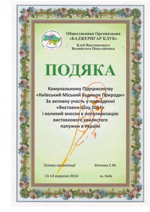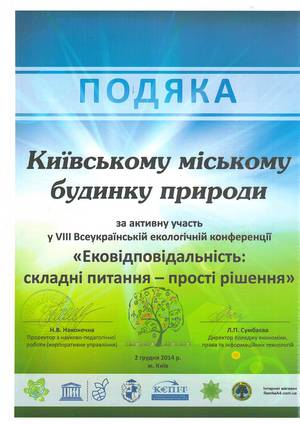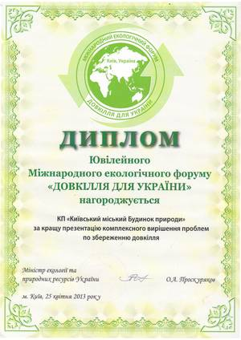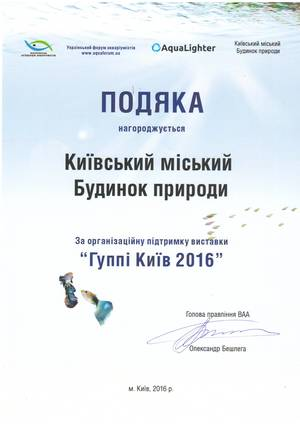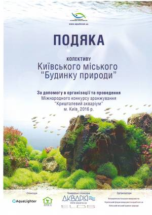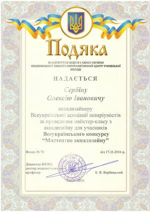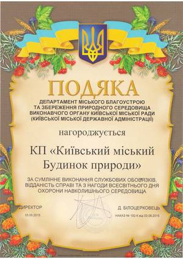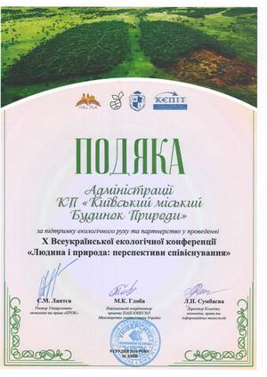
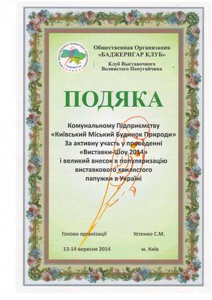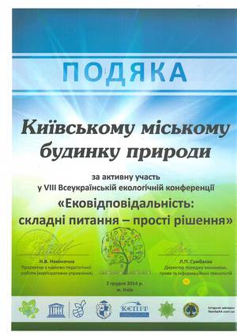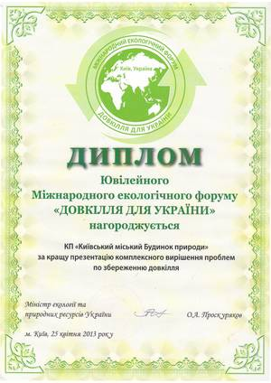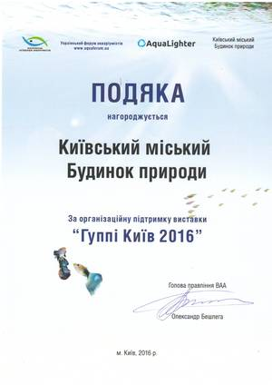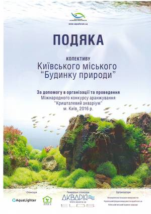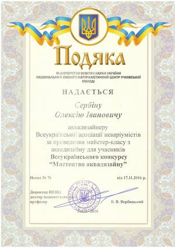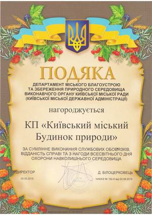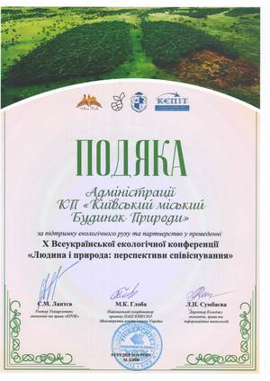